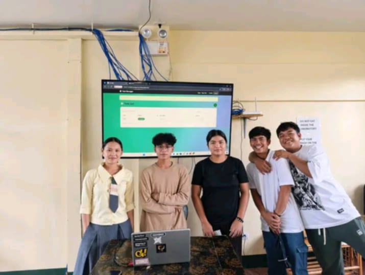
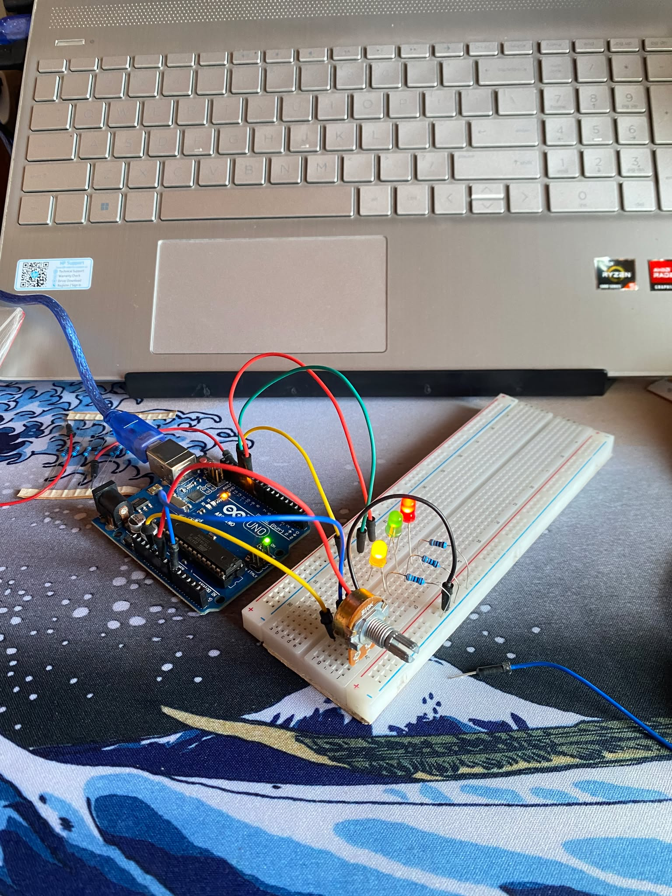
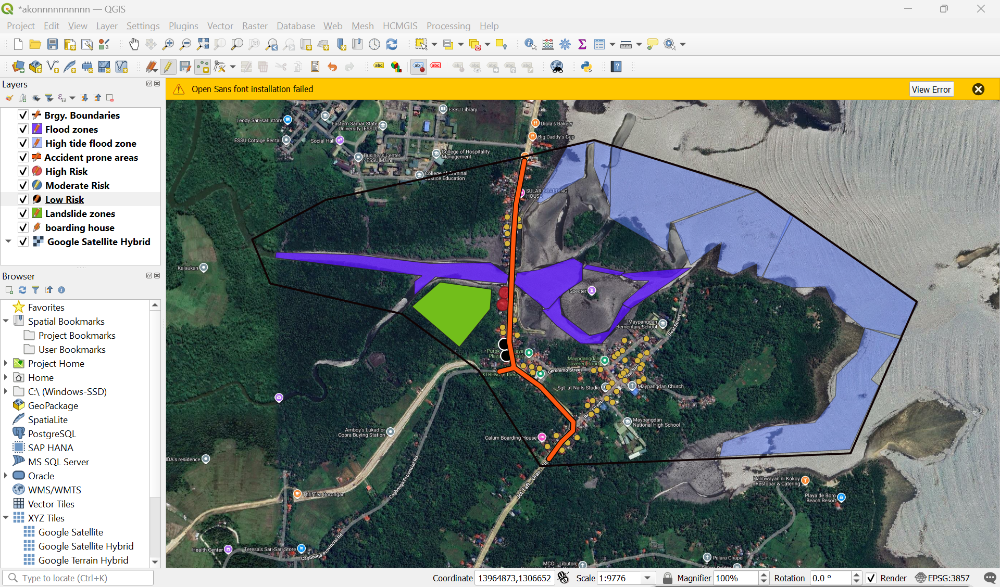

Task Manager
Task Manager is a Windows tool that lets you view and manage programs and processes running on your computer.
Calvadores Jhonie Rose B.
B.S. Information Technology
Hi Im Jhonie Rose Calvadores, a student who is interested in technology, web design, and learning new things. I enjoy creating simple websites and exploring how HTML and CSS can be used to make creative and useful projects.
About Me
Im currently improving my skills in web development and information technology. My goal is to continue learning, gain more experience, and become more confident in creating digital projects.

Task Manager is a Windows tool that lets you view and manage programs and processes running on your computer.

Arduino is an open-source electronics platform used to build projects with sensors, motors, LEDs, displays, and other electronic components.

It is a free and open-source software used to create, edit, analyze, and display maps and geographic data.